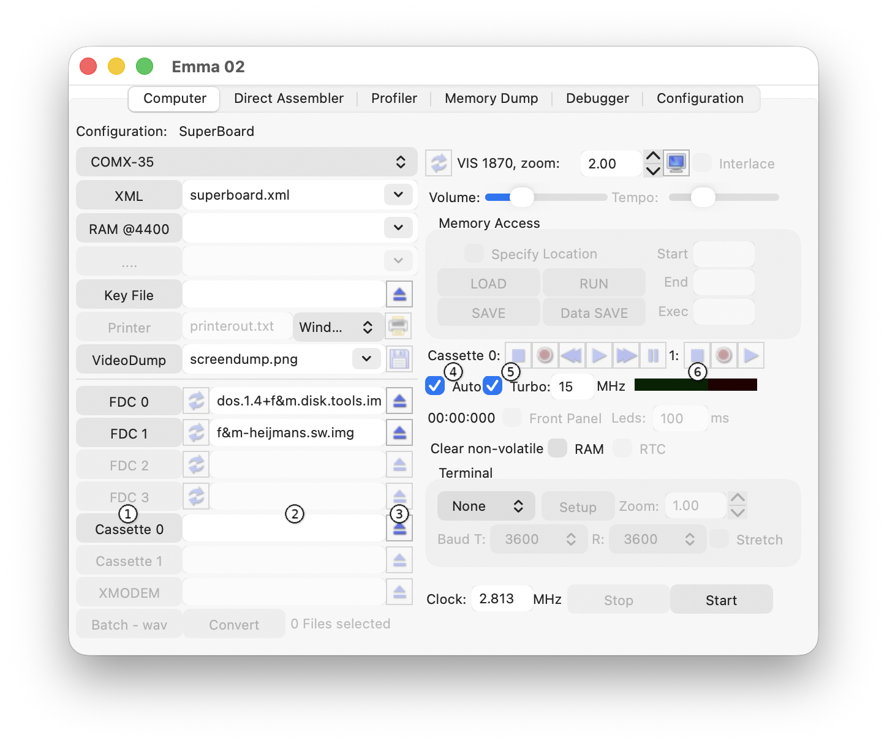
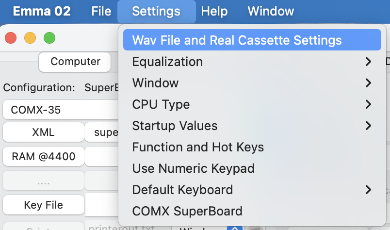
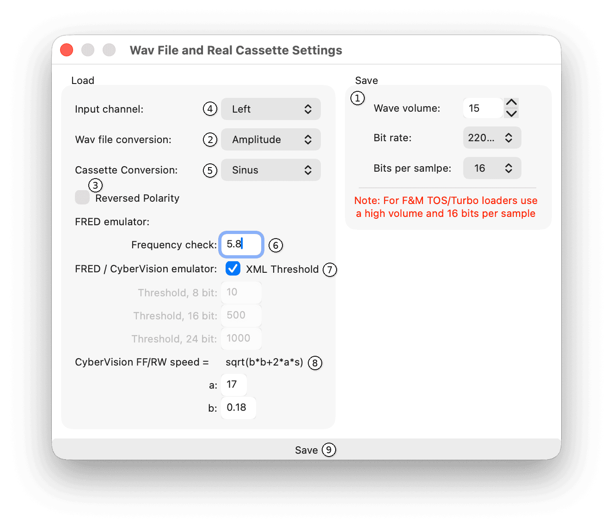
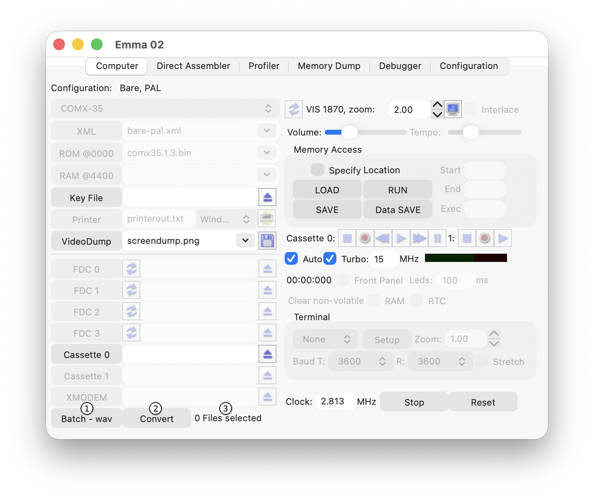

For details on using a real cassette player with Emma 02, see the Real Cassette Support section.
The Wave Files interface is shown below:

To use wave files, specify the .wav file name in the File name text field (2) next to the Cassette button (1).
For automatic and fast loading or saving of .wav files, check the Auto (4) and Turbo (5) options. This is the default setting for most XML configurations with cassette support.
After starting the emulator, the specified .wav file will be used for any load or save commands.
The black bar (6) shows the cassette VU meter (LED indicator).
The default .wav file location is the specific computer directory (located in the application data directory, see the Directory and File Structure section).
Press the Cassette button (1) to change the directory and/or file name.
Result: A file selector window opens allowing selection of another directory and/or file name.
Press the Eject button (3) to remove the file name.
Result: The file name is cleared from the text field.
Use Memory Access SAVE after loading a .wav file to store it in a modern format for faster loading in future sessions.
Important: Changing the wave file settings can affect the usability of the .wav files on a real computer and the ability to load computer-generated .wav files into the emulator. See the Wave File Settings section below.
When the Turbo option (5) is selected, the emulator will increase the CPU speed during .wav file access to allow faster LOAD and SAVE operations in the emulator.
Note: The default Turbo speed is 15 MHz. Higher values (e.g. 50 MHz) may work on fast systems but can consume all CPU resources on slower host computers.
Open Wav File and Real Cassette Settings via the menu shown below.

Settings for saving to a file (1):
Settings for loading a .wav file:
Settings only used for Real Cassette loading:
Settings only used for the FRED emulator:
Settings only used for the CyberVision emulator:

Press the Save button (9) to save the settings.
Important: When using the F&M TOS or Turbo loaders, leave the volume on 15 and the bits per sample on 16!
1 to 15 (where 15 is the loudest)
11025, 22050, 44100 or 88200 (samples per second)
8 or 16
Two conversion types can be used:
By default, this is set to Amplitude, which works for all .wav files. Depending on the emulated computer, this might need to be changed if loading does not work or gives tape errors.
Switch converted signal polarity (1->0 and 0->1) as described for the conversion types above.
Used in Real Cassette Support
Used in Real Cassette Support
The Batch - wav feature converts a number of selected files to .wav files by instructing the emulator to save them one by one.
Press the Batch - wav button (1) to select files to be converted.
Result: A multi file selector window opens.

The number of files selected is shown in the File count text field (3) to the right of the Convert button (2).
Press the Convert button (2) to start the conversion.
Result: The emulator processes all files and performs the required SAVE commands.
Important: Make sure an emulator is running before starting the conversion.
Note: Not all files are supported. For example, COMX-35 machine code .comx files (first byte = 1) cannot be saved with PSAVE.